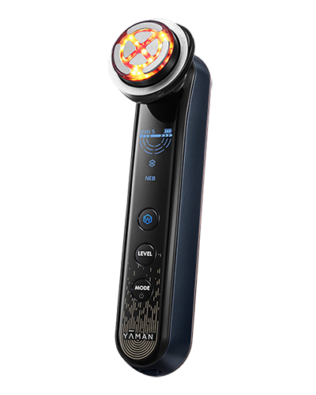
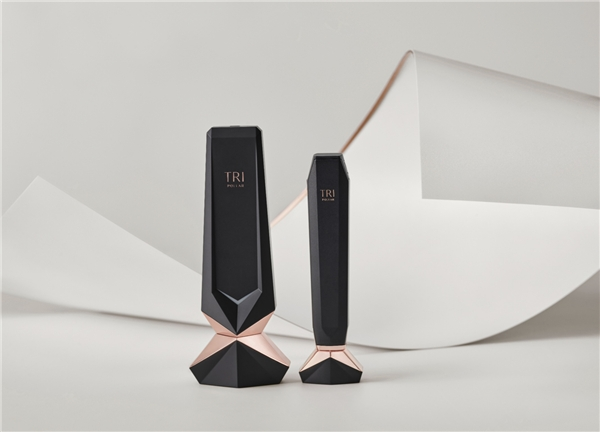
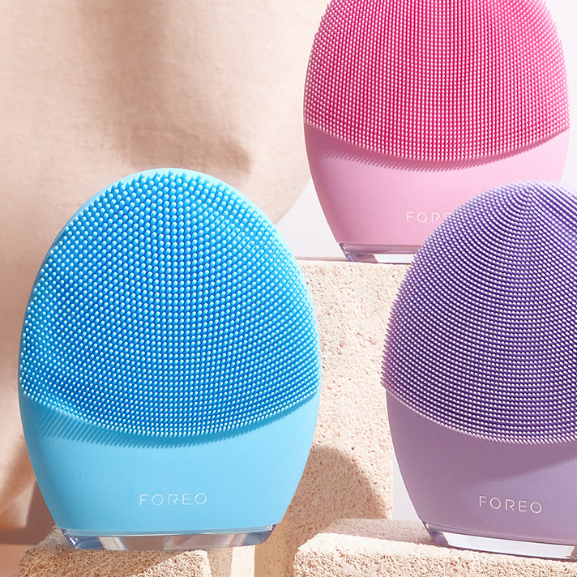
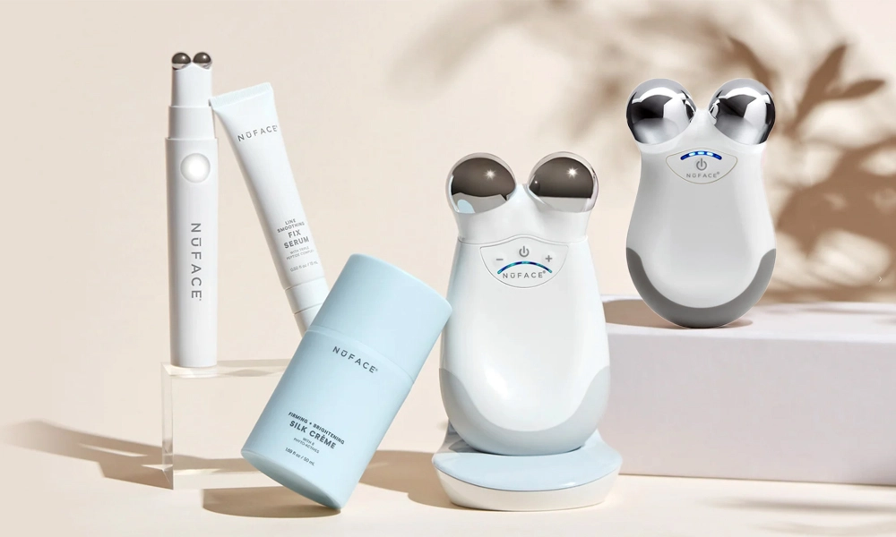

Derma-Luxury · RF Facial Device
肌肤奢华 · 射频美容仪 CMF
Lumina is a D2C beauty-tech brand at the intersection of dermatological science and self-care ritual. Competing against Yaman, Tripollar, Foreo, and NuFace in China's ¥30B+ at-home beauty device market, Lumina differentiates through clinical credibility expressed through luxury material language — not a medical device that happens to be beautiful, but a beauty object built to medical standards.
Female, 25–40, urban professional, household income ¥250K+. She follows dermatologists on Xiaohongshu, reads ingredient labels, and already spends ¥2,000+/year on serums and facials. The RF device is her upgrade from topicals to tech — she sees it as preventative investment, not vanity. She keeps the device on her vanity, not hidden in a drawer.
Yaman: Functional but cold — "looks like a blood pressure monitor." Too clinical.
Tripollar: Gold accents but body feels lightweight/hollow. Perceived quality gap.
Foreo: Playful silicone reads as "toy," not serious skincare.
NuFace: Clean but mass-market feel; limited color options.




Three market forces shape the CMF direction. Consumers judge efficacy through material cues before purchase. Devices must be photogenic for social media. And 30–40% of purchases are gifts — packaging must convey thoughtful luxury.
| Competitor | Strength | Weakness → Our Opportunity |
|---|---|---|
| Yaman Bloom | Strong medical credibility | "Hospital equipment" — no warmth, no luxury cues, no color variety |
| Tripollar Stop | Gold conveys premium | Gold reads as dated. Body feels lightweight/hollow. Limited variants. |
| Foreo UFO 3 | Playful, bold identity | "Toy" perception. No premium weight. Medical credibility weak. |
| NuFace Trinity | Clean, professional | Mass-market feel. Plastic-y at the price. Limited emotional range. |
Key Insight: The market is split between "too clinical" (Yaman, NuFace) and "too playful" (Foreo). Tripollar occupies the middle but with dated aesthetics. The opportunity: genuine material luxury — titanium, ceramic finishes, soft silicone — at accessible price, with color variants bridging clinical trust and self-care warmth.
Three strategic pillars emerge from research, each anchored in a core user need. Three competing CMF schemes were generated, then evaluated through a weighted matrix to surface the winner.
| Criterion | Weight | A: Clinical Purity | B: Derma-Luxury | C: Jewelry Object |
|---|---|---|---|---|
| Brand Alignment / 品牌匹配 | 25% | ★★★ | ★★★★★ | ★★★ |
| Market Differentiation / 差异化 | 20% | ★★ | ★★★★★ | ★★★★★ |
| User Desirability / 用户吸引力 | 20% | ★★★ | ★★★★★ | ★★★★ |
| Production Feasibility / 量产可行性 | 20% | ★★★★★ | ★★★★ | ★★ |
| Cost Control / 成本可控性 | 15% | ★★★★★ | ★★★★ | ★ |
| Weighted Total | 100% | 3.45 | 4.65 | 3.25 |
Scheme B (Derma-Luxury) scores highest on brand alignment. The strategy of translating skincare textures into product CMF — gloss = serum, velvet = cream, brushed Ti = precision tool — is both emotionally resonant and rationally defendable. It bridges the gap between clinical trust and self-care indulgence that no competitor occupies.
V2 (Jade Calm) absorbs muted jade-green concept from Scheme C. V3 (Midnight Serum) added for dramatic/evening vanity aesthetic. Titanium treatment head upgraded to warm titanium — industry-first warm-toned Ti head. Charging base upgraded from ABS to zinc alloy + silicone dock for daily quality perception.
Lumina translates skincare textures into product CMF — the high-gloss body recalls a luxury serum bottle, velvet silicone feels like a rich cream, brushed titanium is precision-engineered like a dermatologist's tool. Warm metallic tones add emotional heat to the clinical material base.
Each variant maps to a different skincare ritual: morning freshness, calming afternoon, and night-time treatment.
Each material transition is choreographed — cool titanium makes first contact with skin, warm velvet grip settles into the hand, ceramic-smooth body catches ambient light on the vanity. The arc of interaction transforms a treatment into a moment of self-care.


The LED halo is laser-etched into frosted PMMA — invisible when dark, a warm amber glow when illuminated. The charging base is a weighty zinc alloy with dark chrome PVD finish, its silicone dock absorbing the device with a soft landing.

Zamak 3 zinc alloy · dark chrome PVD · #220 linear brush · matte silicone dock insert. The weight of the base reinforces quality perception every time the user docks the device. Contrast between mirror-dark metal and soft silicone.


Medical ABS / Ti PVD / LSR / PMMA / Zn Alloy
Isometric separation showing the six material zones — Titanium treatment head, Medical ABS body, LSR grip, PMMA diffuser, Zn Alloy base, silicone dock.

The device lives on the vanity, in the hand, and in the unboxing moment. Packaging uses FSC kraft paper, sugarcane fiber tray, braided fabric USB-C cable, and a seed-embedded thank-you card.


FSC Kraft · Sugarcane Tray · Braided Cable · Seed Paper Card
Three color variants, six material zones, medical-grade precision, and a sustainability story — every CMF decision serves the brand, the user, and the ritual of self-care.
三款配色 · 六个材料区域 · 医疗级精度 · 可持续叙事
TOOLS · Figma / Blender / GPT Image 2 / Python / Adobe CC